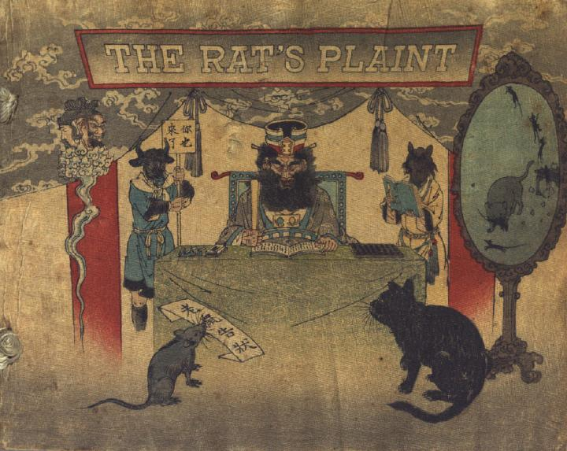

閻魔大王の前に控える鼠と猫。鼠は「老鼠告状」と書かれた訴状らしきものをくわえている。閻魔大王は机に座り、書物を読みあげている。その後ろに、牛頭と馬頭が控えている。
著作者：John Little Archibald／出典：親書誌：U426_nichibunken_0122：The rat's plaint／日付：2006／資源識別子：U426_nichibunken_0122_0001_0000
Copyright (c)2010- International Research Center for Japanese Studies, Kyoto, Japan. All rights reserved.